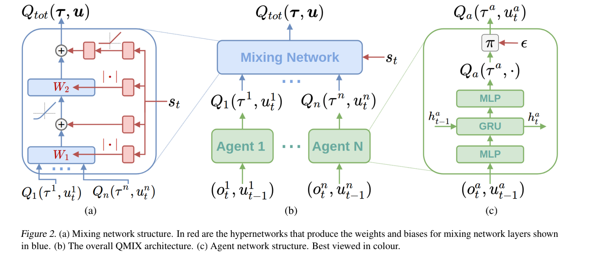
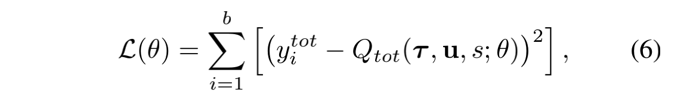
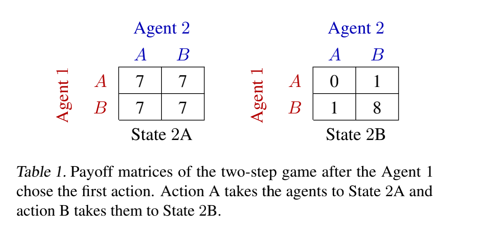
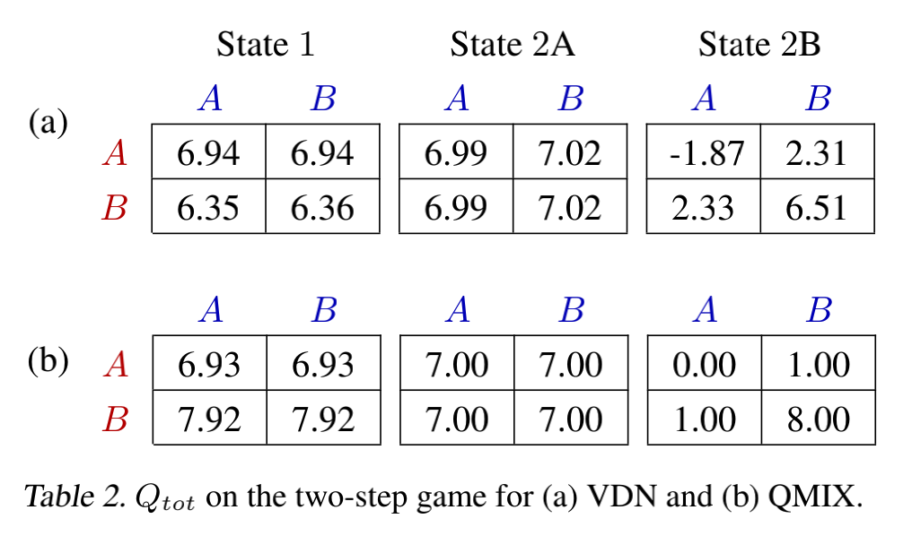

<!DOCTYPE html>
<html xmlns="http://www.w3.org/1999/xhtml" lang="zh" xml:lang="zh">
<head>
  <meta charset="utf-8" />
  <meta name="generator" content="pandoc" />
  <meta name="viewport" content="width=device-width, initial-scale=1.0, user-scalable=yes" />
  <meta name="last_modified" content="2021-04-05T19:35:43Z" />
  <meta name="published" content="Mar 31, 2021" />
  <title>QMIX</title>
  <link rel="stylesheet" href="/static/style.css" />
  <link rel="stylesheet" href="/static/syntax-highlighting.css" />
  <style>
      code{white-space: pre-wrap;}
      span.smallcaps{font-variant: small-caps;}
      span.underline{text-decoration: underline;}
      div.column{display: inline-block; vertical-align: top; width: 50%;}
  </style>
  <script src="https://cdn.jsdelivr.net/npm/mathjax@3/es5/tex-chtml-full.js" type="text/javascript"></script>
  <!--[if lt IE 9]>
    <script src="//cdnjs.cloudflare.com/ajax/libs/html5shiv/3.7.3/html5shiv-printshiv.min.js"></script>
  <![endif]-->
  <link rel="icon" href="/static/favicon.ico" type="image/x-icon"/> <link rel="shortcut icon" href="/static/favicon.ico" type="image/x-icon" />
  <meta name="author" content="Yanjie Ze">
  <meta name="viewport" content="width=device-width, initial-scale=1" />
  <script> window.dataLayer = window.dataLayer || []; function gtag(){dataLayer.push(arguments);} gtag('js', new Date());
  gtag('config', 'UA-116308654-1'); </script>
</head>
<body>
<a id="return" href="/">  </a>
<header id="title-block-header">
<h1 class="title">QMIX</h1>
<p class="date">Mar 31, 2021</p>
</header>
<p>Paper：QMIX: Monotonic Value Function Factorisation for Deep Multi-Agent Reinforcement Learning, ICML 2018.</p>
<h1 id="一idea">一、idea</h1>
<p>在<strong>IQL（Independent Q Learning）</strong>和<strong>COMA（Counterfactual Multi-agent）</strong>之间寻找平衡，在<strong>VDN（Value Decomposition Network）</strong>上做出升级。</p>
<p>在全局Q和单体Q上加上一个非常重要的约束，保证Q_total的有效： <span class="math display">\[
\frac{\partial Q_{tot}}{\partial Q_a}\geq 0, \forall a
\]</span> 此外，每个Q_a用一个network，mix起来的时候也用一个network。</p>
<h1 id="二背景dec-pomdp">二、背景：Dec-POMDP</h1>
<p>一个fully cooperative multi-agent task可以用<strong>Dec-POMDP</strong>来描述。(Decentralized Partially Oberverable Markov Decision Process) <span class="math display">\[
G=&lt;S,U,P,r,Z,O,n,\gamma&gt;
\]</span> 每轮，agents形成一个joing action: <span class="math display">\[
u^a \in U \rightarrow \mathbf{u} \in U^n \equiv\mathbf{U}
\]</span> 这导致状态转移： <span class="math display">\[
P(s&#39;|s,\mathbf{u}):S\times \mathbf{U} \times S \rightarrow [0,1]
\]</span> 所有的agent共享一个reward function: <span class="math display">\[
r(s,\mathbf{u}): S\times \mathbf{U} \rightarrow \mathbb{R}
\]</span> 以及discount factor： <span class="math display">\[
\gamma \in [0,1)
\]</span></p>
<p>考虑一个Partially Observable的场景，agent根据state和action获得observation z: <span class="math display">\[
O(s,a): S\times A \rightarrow Z
\]</span> 每个agent有一个action- observation的history： <span class="math display">\[
\tau^a \in T\equiv(Z\times U)^*
\]</span> 基于这个history，agent才有stochastic policy： <span class="math display">\[
\pi^a(u^a|\tau^a):T\times U \rightarrow [0,1]
\]</span> 而对于joint policy，有一个joint action-value function： <span class="math display">\[
Q^\pi (s_t, \mathbf{u}_t) = \mathbb{E}_{s_{t+1}:\infty, \mathbb{u_{t+1}}:\infty}[R_t|s_t,\mathbb{u_t}]
\]</span></p>
<p>注意：centralized training， decentralized execution。</p>
<h1 id="三value-decomposition-network">三、Value Decomposition Network</h1>
<p>直接用每个agent的Q的和作为总体的Q。 <span class="math display">\[
Q_{tot}(\mathbf{\tau,u})=\sum_{i=1}^n Q_i(\tau^i,u^i;\theta^i)
\]</span></p>
<h1 id="四qmix">四、QMIX</h1>
<h2 id="公式">（1）公式</h2>
<blockquote>
<p>Key to our method is the insight that the full factorisation of VDN is not necessary in order to be able to extract decentralised policies that are fully consistent with their centralised counterpart. Instead, for consistency we only need to ensure that a global argmax performed on Qtot yields the same result as a set of individual argmax operations performed on each Qa: <span class="math display">\[
\argmax_u Q_{tot}(\mathbf{\tau,u})=\begin{pmatrix} argmax_{u^1}Q_1(\tau^1,u^1)\\.\\.\\.\\argmax_{u^n}(\tau^n,u^n)\end{pmatrix}
\]</span> 此外，还要保证： <span class="math display">\[
\frac{\partial Q_{tot}}{\partial Q_a}\geq 0, \forall a
\]</span></p>
</blockquote>
<h2 id="模型">（2）模型</h2>
总的框架：
<center>

</center>
<p>对于每个agent，用一个DRQN来表示值函数，如上图（c）所示。</p>
<p>mixing network的权重由hypernetwork生成，利用了全局状态s（而不是观察状态），如上图（a）所示。</p>
损失函数：
<center>

</center>
<h2 id="representational-complexity">(3)Representational Complexity</h2>
<p>对于那些action依赖于在同一轮中的其他agent的值函数，QMIX可能不能正确地进行值分解。但是QMIX至少比VDN做得好。</p>
<h1 id="五two-step-game">五、Two-Step Game</h1>
<center>

</center>
<p>设计了一个简单的game来测试QMIX和VDN的效果。</p>
<p>在第一步，agent1选一个矩阵，agent2不动。</p>
<p>在第二步，agent1和agent2各自take action，获得global reward。</p>
<p>结果展示在下表中。可以看出，QMIX成功学习到了最优的策略：reward为8的情况。</p>
<center>

</center>
<h1 id="六ablations">六、Ablations</h1>
<p>做ablation主要是为了调查： 1. 额外状态信息的影响 2. 非线性mixing network的必要性</p>
<h1 id="awesome-links">Awesome Links☆</h1>
<ul>
<li><p><a href="https://zhuanlan.zhihu.com/p/203164554">伏羲讲堂多智能体强化学习中的值函数分解——VDN、QMIX、QTRAN</a> 这篇文章讲的很好，倾情推荐。</p></li>
<li><p>这篇文章教你<a href="https://soygema.github.io/starcraftII_machine_learning/#0">如何搭建starcraft2环境</a></p></li>
</ul>
<a style="color:black;font-size:2em;float:right;margin-right:30px;margin-bottom:40px;" href="../">[Return to the homepage]</a>
<script>
var code_blocks = document.querySelectorAll("pre.sourceCode");
code_blocks.forEach(function(block) {
  block.classList.add("numberSource");
  block.classList.add("numberLines");
});
</script>
</body>
</html>
